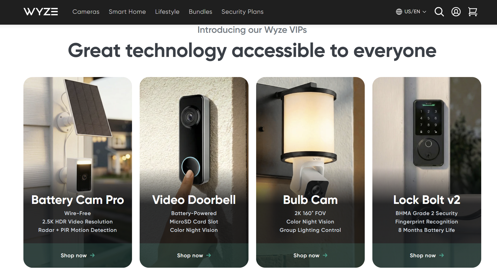
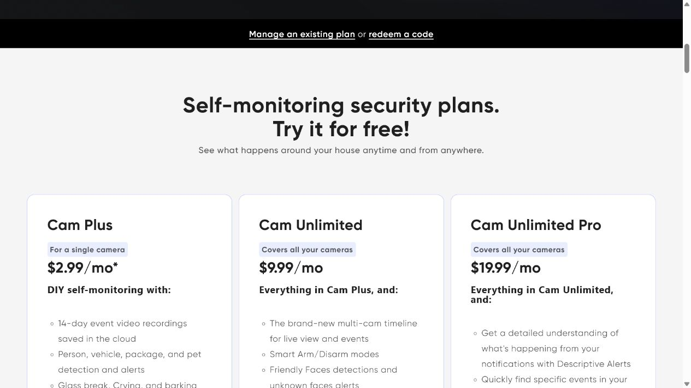
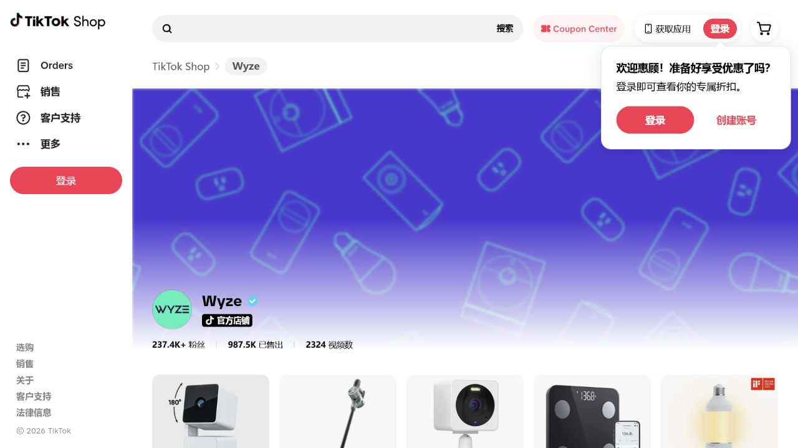
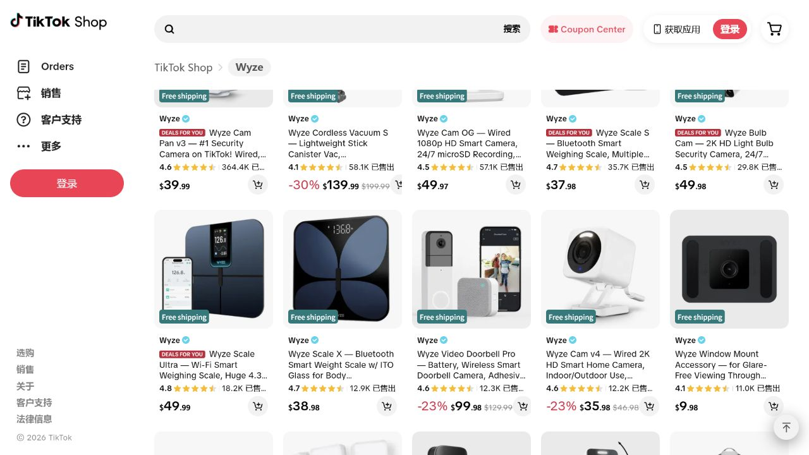
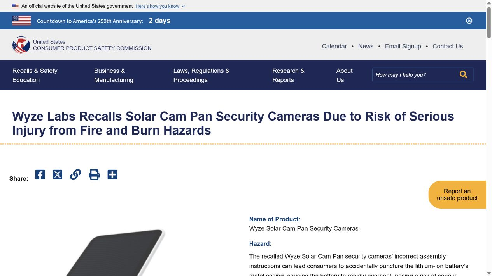
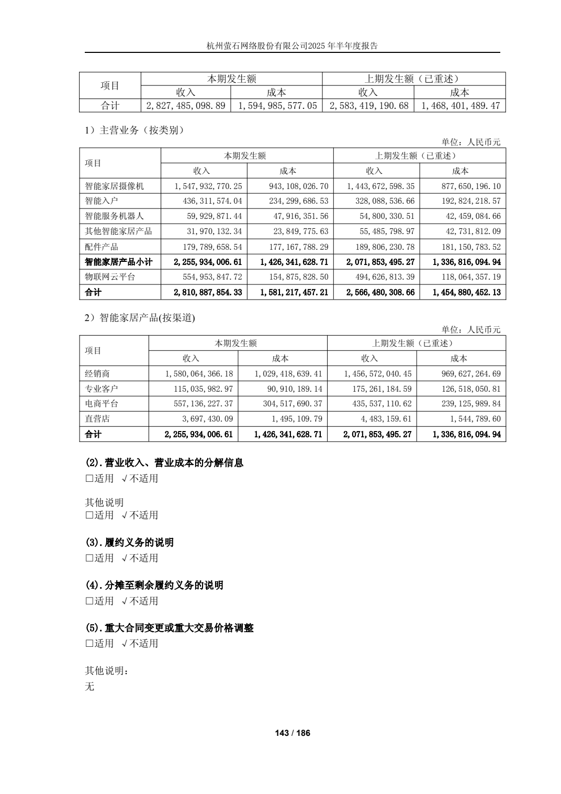
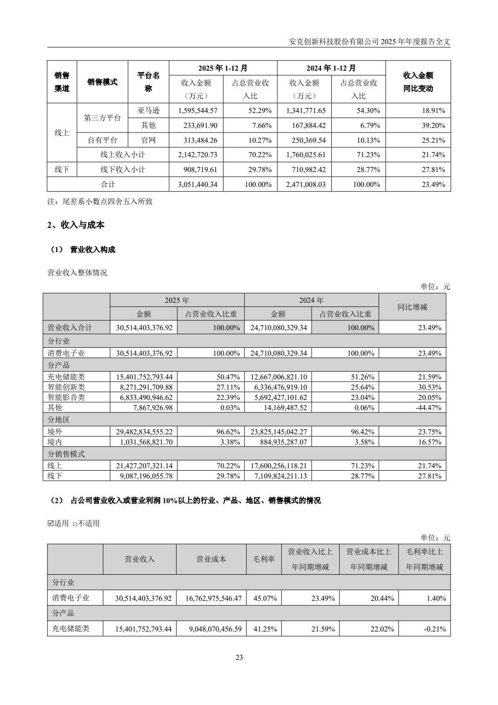
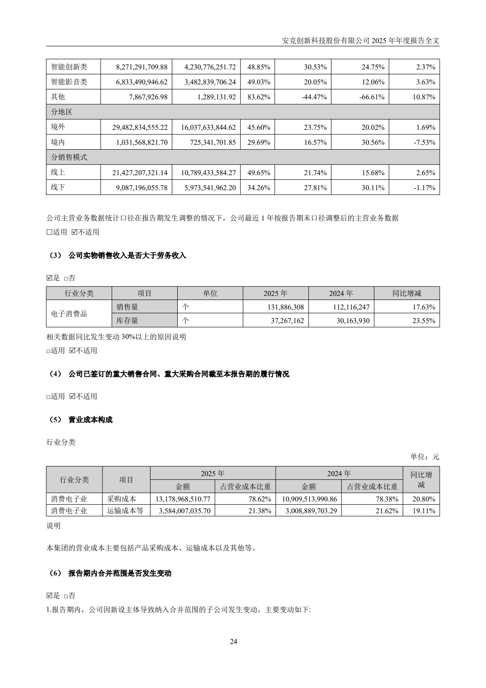

从 19.99 美元到 32 万台召回：Wyze 的低价增长、订阅飞轮与信任成本

Wyze 是一家成立于西雅图的智能家居品牌，由前 Amazon 员工团队于 2017 年创立。它以 19.99 美元的低价摄像头切入北美家庭安防市场，随后扩展到门铃、灯泡、吸尘器和体脂秤等品类，并通过自有账户、App 与云服务订阅，将一次性硬件交易转化为持续的家庭用户关系。
EXECUTIVE SUMMARY
执行摘要
Wyze 最容易被看见的是低价，最值得研究的却不是低价。
它进入的是一个仍在快速扩张的品类。Grand View Research 估算，北美智能家居安防摄像头市场规模在 2024 年约为 37.8 亿美元，2030 年预计达到 88.3 亿美元，2025—2030 年复合增长率为 15.2%。需求增长来自智能家居和 IoT 普及、安装门槛下降，以及远程告警、AI 识别等功能逐渐成为家庭安全的日常配置。
2017 年，Wyze 用一台 19.99 美元的 Wi-Fi 摄像头切入这个市场。1080p、夜视、双向语音，这些当时并不稀奇；真正有攻击性的，是价格。同期 Amazon Cloud Cam 售价 119.99 美元，WyzeCam 便宜了整整 100 美元。按公司自述，首款摄像头推出不到一年便发出第 100 万台订单。
如果故事停在这里，Wyze 只是一个依靠中国供应链重做价格的消费电子品牌。九年后的产品、渠道和收费结构显示，它真正搭建的是另一门生意：用低价设备降低首次购买门槛，用账户连接更多设备，再用云录像和 AI 识别收取月费。硬件负责进入家庭，账户负责留住关系，订阅负责延长收入周期。
但这套模型也有一条对称的风险链。设备越便宜，铺设数量越大；设备越深入家庭，隐私和安全责任越重；订阅越依赖信任，一次安全事故或大规模召回的破坏力越大。2024 年的摄像头缩略图串号事件，以及 2026 年涉及美国约 321,360 台设备的 Solar Cam Pan 召回，都说明 Wyze 获得的并不只是规模，还有与规模等量增长的责任。
本报告形成六项核心判断：
- 19.99 美元不是完整的商业模式，而是获客入口。 低价只有把用户带入账户、多设备和订阅体系后，才可能从让利变成投资。
- Wyze 不是纯粹的“独立站品牌”，而是多渠道获客、自有账户承接关系的混合型 DTC。 Amazon、Walmart、Best Buy、Home Depot、TikTok Shop 负责扩大可得性，官网和 App 承担设备管理、订阅与用户运营。
- 这门生意的基本经济单位不是单台摄像头，而是一个家庭账户中的设备组合。 从第四台摄像头开始，不限设备套餐比逐台订阅更便宜，这一价格结构鼓励用户从单设备走向多设备。
- Wyze 已经证明了跨品类销售的可能性，但尚未公开证明跨品类复购的规模。 TikTok Shop 中吸尘器、体脂秤等非安防产品的公开计数很可观，它们说明品牌许可正在外溢，却不能直接证明购买者来自既有摄像头用户。
- Wyze 的品牌资产呈现出一种“窄腰结构”。 顶部的价格认知很强，底部的账户与社区关系也在形成；中间的感知质量与品牌信任却更脆弱。它很容易被记住，也有能力留住一部分用户，但可靠性与安全事件会卡住品牌向上溢价和跨品类延展。
- Wyze 的真正瓶颈不是继续降本，而是守住信任。 家庭摄像头出售的是“持续安心”，可靠性、隐私、付费边界和召回能力共同决定订阅模型能否长期成立。
01
研究问题：低价之后，Wyze 靠什么继续增长？
研究 Wyze 很容易掉进两个陷阱。
第一个陷阱，是把它写成“美国品牌加中国制造”的低价奇迹。这个解释没有错，但只解释了第一台设备为什么卖得出去，解释不了用户为什么继续买、为什么愿意按月付费，也解释不了一家低价品牌为何要经营账户、论坛、邮件、短信和订阅系统。
第二个陷阱，是把它简单归为 DTC 品牌。Wyze 确实拥有 Shopify 官网，但它也进入了 Amazon、Best Buy、Costco、Home Depot、Walmart 等大型零售渠道，并在 TikTok Shop 形成了相当规模的公开销售计数。它早已不是只靠官网完成交易的直销品牌。
因此，本报告不把“低价”和“独立站”当作答案，而是追问三个更具体的问题：
- 低价设备如何转化为持续收入？
- 平台渠道与自有渠道分别承担什么角色？
- 当设备规模扩大，什么会成为增长的硬约束？
由于 Wyze 是私人公司，没有公开同口径的收入、硬件毛利、订阅收入、续费率和渠道占比，本报告不估算其 GMV 或利润。分析主要依据品牌官网、官方论坛、监管公告、授权零售渠道、第三方流量估算、平台公开页面计数，以及萤石网络、安克创新的公开财报。文中将可验证事实与研究判断分开，避免用表面繁荣替代财务结论。
02
品类前提：Wyze 切中的不是大市场，而是价格断层
据 Grand View Research，北美智能家居安防摄像头市场预计将从 2024 年的 37.8 亿美元增长到 2030 年的 88.3 亿美元，六年间增加约 50.5 亿美元。15.2% 的年复合增速，说明这不是一个只能依靠抢夺对手份额才能增长的成熟市场，而是一个仍在持续吸收新家庭、新场景和新增设备的扩张型品类。
但“市场在增长”只是最表层的发现。更值得注意的是，品类的增长方式正在发生变化。
传统家庭安防更接近一项工程：设备贵、安装重、购买频次低。智能摄像头把它变成了消费电子产品——可以自行安装，可以通过手机远程查看，可以随着门口、客厅、车库、后院等场景增加而逐台扩充。Grand View Research 将 IoT 普及、安装便利、产品可得性和智能告警列为主要增长动力。这意味着市场扩大的基本单位，正在从“购买一套安防系统”变成“为一个家庭增加一个连接节点”。
Wyze 的 19.99 美元正好切中了这个变化。
2017 年同期，Amazon Cloud Cam 售价 119.99 美元，WyzeCam 为 19.99 美元；两者都提供 1080p、移动侦测等基础能力。Wyze 并不是在相同价格带里多给一点功能，而是把进入门槛压到对手的约六分之一。价格差距大到足以改变消费者的问题：
- 面对 119.99 美元，用户会问“这台摄像头值不值得买”；
- 面对 19.99 美元，用户更容易问“要不要先买一台试试”；
- 当第一台足够便宜，下一步才可能变成“家里还可以再装几台”。
因此，Wyze 的低价策略不只是从高价品牌手里抢走一笔订单。它还在扩大品类的可消费人群、降低试用成本，并推动摄像头从单点设备走向多点部署。换句话说，它改变的不只是市场份额，更是需求曲线。
这也揭示了北美智能摄像头市场的一个结构性矛盾：硬件价格不断下探，市场收入却仍被预测高速增长。要让两件事同时成立，增长就不能只依靠单台设备涨价，还需要更多家庭进入、每户部署更多设备，以及云存储、AI 识别、告警等服务价值上升。
这正是 Wyze 后续走向账户和订阅的品类背景。低价摄像头把更多节点送进家庭；节点越多，录像、识别、通知与统一管理的需求越强，服务层才有机会形成持续收费。反过来，节点越多，云成本、隐私风险、固件维护和召回责任也越大。
所以，这个增长市场同时存在两条曲线：
- 一条是设备渗透和服务收入的增长曲线；
- 另一条是安全、运维和品牌责任的成本曲线。
Wyze 的商业模式，本质上是在第一条曲线上寻找收入，同时避免被第二条曲线吞掉。
03
第一增长引擎：低价不是利润答案，而是进入家庭的成本
Wyze Cam v1 在 2017 年以 19.99 美元上市时，完成了一次非常清晰的市场切割：它没有先证明自己比高价产品更专业，而是把“要不要买一台摄像头”的决策成本压到足够低。
这是低价最重要的作用。它不只是争夺价格敏感用户，还会改变消费者的决策方式。购买一件 200 美元的安防设备，用户会比较品牌、功能、隐私和售后；购买一件 19.99 美元的产品，更多人愿意先试再说。Wyze 由此降低的不是制造成本本身，而是首次交易的心理摩擦。
不过，低价入口有一个前提：品牌必须知道用户进门以后去哪里。
如果第一次购买结束后，用户仍然只是平台上的匿名订单，那么 19.99 美元很可能只是一次利润让渡。只有当设备需要绑定账户、进入 App、连接后续设备并产生服务需求时，低价才有机会成为获客投资。
从这个角度看，Wyze 的第一台摄像头同时承担三项任务：
- 用极低门槛完成首次获客；
- 让用户注册并进入设备管理体系；
- 为后续设备和订阅建立关系起点。
因此，Wyze 的核心资产不是“能做出便宜摄像头”。供应链可以让许多公司做到这一点。更难复制的是：品牌能否把一次低价成交，转化为一个可持续经营的家庭账户。
04
第二增长引擎：账户密度，而不是单台销量
截至观察日，Wyze 官方服务页显示三档主要摄像头订阅：
| 套餐 | 公开价格 | 计费方式 | 主要角色 |
|---|---|---|---|
| Cam Plus | 2.99 美元/月 | 单台摄像头 | 低门槛付费入口 |
| Cam Unlimited | 9.99 美元/月 | 不限摄像头数量 | 多设备家庭 |
| Unlimited Pro | 19.99 美元/月 | 不限摄像头数量 | 更高阶服务 |
付费功能包括云端事件录像，以及对人、宠物、车辆、包裹等对象的识别。

图 1 · Wyze 官方套餐页：Cam Plus、Cam Unlimited 与 Unlimited Pro 的价格和设备覆盖。来源：Wyze 官方服务页；观察日期：2026-07-02。
这张定价表透露了 Wyze 对用户价值的理解：它计价的表面单位是摄像头，真正希望扩大的却是一个账户中的设备数量。
单台 Cam Plus 每月 2.99 美元。三台合计 8.97 美元，四台则达到 11.96 美元，超过 9.99 美元的 Cam Unlimited。也就是说，第四台设备是一个清晰的价格临界点。用户一旦在前门、后院、车库等多个位置部署摄像头，升级不限设备套餐就变得更合理。
这不是“强迫订阅”，而是一种典型的价格架构：逐台计费负责降低第一次付费的阻力，不限量套餐负责承接多设备家庭。设备越多，订阅的相对价格越低；而订阅一旦覆盖整个家庭，新设备接入同一账户的边际成本也随之下降。
Cam Plus 在 2020 年推出时的标准月费为 1.99 美元，2026 年公开价格为 2.99 美元，名义价格上升了 50%。这说明 Wyze 已在提高服务层的变现强度，但它不能单独证明用户留存良好：公司没有公开存量用户是否统一执行新价格，也没有披露续费率和订阅收入。
更稳妥的判断是，Wyze 已经把“低价硬件—多设备—订阅升级”的收费路径设计完整；这条路径究竟贡献了多少利润，公开资料尚不足以回答。
一个更重要的指标：每个账户装了多少设备
外界通常关心 Wyze 卖了多少台摄像头，但对订阅模型而言，更关键的经营指标可能是：
- 每个活跃账户的设备数量；
- 单设备账户向多设备账户的转化率；
- 多设备账户的订阅渗透率；
- 新增设备带来的服务收入，而不只是硬件收入。
Wyze 没有披露这些数字。可它的套餐设计已经说明，公司希望优化的不是孤立的单品销量，而是家庭账户的“设备密度”。当商业基本单位从 SKU 变成账户，产品、渠道和定价都会围绕关系长度重新组织。
05
渠道真相：平台做覆盖，自有体系做承接
把 Wyze 称为“原生 DTC 品牌”并不准确。更合适的描述是：它是一家以自有账户为关系中枢、以多渠道完成销售覆盖的消费硬件品牌。
官方授权零售商名单包括 Amazon、Best Buy、Costco、Home Depot 和 Walmart。TikTok Shop US 在 2026 年 7 月 2 日显示 237.4K+ 粉丝、987.5K Sold 和 2,324 条视频。由于平台没有公开 Sold 的统计方法，这些数字不能当作审计销量、订单量或收入，但足以说明 Wyze 并不排斥平台规模。

图 2 · Wyze TikTok Shop 官方店铺页面。页面展示 237.4K+ 粉丝、987.5K Sold 与 2,324 条视频；计数方法未公开，不等于审计销量或收入。来源：TikTok Shop；观察日期：2026-07-02。
官网承担的任务不同。内部数据识别到 wyze.com 使用 Shopify，并部署 Klaviyo、Postscript、Recharge 和分析工具，分别对应邮件、短信、订阅管理与行为分析。它们既可服务营销，也明显支持留存、复购和持续扣费。
Similarweb 对 2026 年 3 月的估算显示，wyze.com 月访问量约 680 万，桌面流量中 65.15% 为 Direct，美国占桌面流量 90.39%，主要自然搜索词包括“wyze login”。这些数据只能看量级：Direct 不等于全部来自老用户，“wyze login”也不能代表所有访问目的。但与账户、设备管理和订阅入口放在一起，它们共同指向一个结论——官网不只是品牌橱窗，还是售后和服务关系的基础设施。
Wyze 的渠道结构可以概括为两层：
| 层级 | 主要渠道 | 核心任务 | 品牌获得什么 |
|---|---|---|---|
| 交易覆盖层 | Amazon、TikTok Shop、大型零售商 | 触达、内容分发、即时成交、线下可得性 | 规模与新客 |
| 关系承接层 | 官网、App、账户、论坛、订阅系统 | 设备管理、服务交付、复购、用户反馈 | 可持续经营的关系 |
这也重新定义了 DTC 的价值。DTC 不等于所有商品都必须从官网售出，而是品牌能否在交易之后继续拥有服务用户的能力。平台可以帮助品牌完成 0 到 1 的成交，自有账户决定品牌有没有机会完成 1 到 10 的复购、订阅和新品冷启动。
论坛中的 Wishlist 是这套关系结构的另一块证据。Wyze 官方曾列出事件筛选、附加 PIN、不限设备套餐等来自用户建议的功能。它不能证明社区决定了整张产品路线图，但至少说明，账户体系不只收集订单，也能把部分用户反馈送回产品开发。
06
产品扩张：品牌信任可以迁移，但不能把线索当成结论
Wyze 今天出售的已经不只是摄像头。
在 2026 年 7 月 2 日的 TikTok Shop 公开页面中，Cam Pan v3 显示 364.4K 已售出，排名靠前的还有 139.99 美元的 Cordless Vacuum S、37.98 美元的 Scale S、49.98 美元的 Bulb Cam 和 99.98 美元的 Video Doorbell Pro。吸尘器页面计数达到 58.1K，仅次于头部摄像头。

图 3 · TikTok Shop 头部商品页面：摄像头、吸尘器、体脂秤等跨品类并列。页面计数不能识别购买者，也不能直接证明既有用户复购。来源：TikTok Shop；观察日期：2026-07-02。
这组产品大致形成三层结构：
- 核心入口层：室内外摄像头，维持高性价比心智；
- 场景延伸层：灯泡摄像头、可视门铃，把安防能力嵌入其他家庭入口；
- 跨品类层：吸尘器、体脂秤等与安防关系较弱的家庭设备。
这里最值得注意的不是 Wyze “什么都卖”，而是它试图把同一品牌、账户和 App 对家庭设备的管理权向外扩张。一旦消费者接受 Wyze 进入家庭空间，品牌获得的就不再只是一次购买，而是进入相邻品类的许可。
但证据边界必须说清楚：TikTok Shop 的商品计数无法识别购买者，也不能证明吸尘器购买者此前拥有 Wyze 摄像头。因此，“跨品类复购已经成功”仍是未经公开数据验证的结论。
现有证据能支持的是另一层判断：Wyze 已经获得了跨品类销售的市场许可；至于这种许可是否显著降低获客成本、提升用户终身价值，还需要账户层面的复购数据。
这一区分很重要。品牌扩品类不应只看新品卖了多少，还应看多少销量来自既有用户、是否共享 App 和服务、是否提高账户活跃度。否则，多品类可能只是多个单品生意并排摆放，并没有形成真正的生态协同。
07
品牌资产诊断：强认知、深关系与脆弱的信任中层
如果只从商业模式看，Wyze 的路径是“低价获客—账户沉淀—订阅变现—跨品类扩张”。但品牌不是一条顺滑的漏斗。用凯勒的顾客基础品牌资产框架观察，Wyze 在品牌识别、品牌表现、品牌判断和品牌关系几个层面并不均衡。
它的结构更像一只被收紧的沙漏：上端很宽，下端也开始变宽，中间却很窄。
1. 价格给了 Wyze 极强的品牌识别
多数消费者未必能说清 Wyze 的技术差异，却很容易记住“那台 19.99 美元的摄像头”。这就是价格作为品牌符号的力量：它把复杂的功能比较压缩成一个简单、可传播的认知代码。
这种定位效率很高。Wyze 不需要先教育市场什么是智能摄像头，只需要告诉用户：过去舍不得买、只准备装一个的东西，现在可以先试一台，甚至多装几台。价格不再只是交易条件，而是品牌进入品类心智的那把刀。
问题也埋在同一个地方。一旦“便宜”成为最强联想，消费者会用低价解释品牌的一切：新品贵了，会觉得偏离初心；功能收费，会怀疑品牌在补收硬件差价；产品出问题，又容易把故障归因于“果然便宜没好货”。低价帮助 Wyze 获得了知名度，也给它设置了溢价天花板。
2. “够用”支撑性价比，“可靠”决定品牌能走多远
公开评论中的正向反馈集中在画面、彩色夜视、安装便利和价格；负向主题则包括 SD 卡失效、Wi-Fi 稳定性、漏报、误报和订阅理解偏差。这说明 Wyze 的功能价值已经成立，但感知质量并不只由参数决定。
对普通消费电子，“偶尔不好用”可能只是体验瑕疵。对家庭安防，“该提醒时没有提醒”会直接动摇产品存在的意义。Wyze 的品牌承诺表面上是高性价比，用户实际购买的却是“关键时刻它会工作”。
因此，Wyze 面临的不是简单的质量问题，而是品牌资产的中层断点：消费者可以因为价格认识它，也可以因为账户继续使用它，但如果无法稳定形成“可信赖”的质量判断，品牌关系就缺少坚实地基。
3. 订阅出售的不是录像，而是“不用惦记”
云录像、人形识别、包裹检测可以列成功能表，用户持续付费的理由却更接近一种情绪收益：离开家以后，不必一直惦记门口、宠物或孩子。
这使 Wyze 与普通硬件品牌不同。它不是在一次交易中兑现全部价值，而是在每一次告警、每一次回看、每一次没有发生意外的日常里，持续兑现“安心”。订阅能够成立，依靠的不只是功能频率，还有品牌能否长期提供掌控感。
这也解释了为什么付费边界格外敏感。当用户认为原有功能被挪到付费墙后面，感受到的不只是涨价，而是品牌改变了最初的交换条件。低价带来的好感，可能迅速转化成“先便宜吸引我，再向我收费”的背叛感。
4. 账户和社区把交易关系变成品牌关系
Wyze 的官网、App、设备账户、订阅和 Wishlist 论坛共同组成了关系层资产。用户买完硬件后仍需要回来管理设备、查看内容、调整服务，部分建议还会进入产品功能。这种持续互动，是平台销量无法替代的品牌复利。
但账户数不等于忠诚度，直接访问也不等于品牌热爱。真正的品牌关系至少要同时满足两点：用户因为使用价值留下，也愿意在有替代选择时继续选择 Wyze。前者可以由设备绑定产生，后者才是品牌偏好。Wyze 已经拥有关系基础设施，是否形成同等强度的主动忠诚，公开数据还不能证明。
5. 品牌延展需要“许可”，也需要“理由”
从摄像头到门铃和灯泡摄像头，延展逻辑清楚：它们仍属于家庭安防与感知网络。到了吸尘器和体脂秤，功能关联明显减弱，Wyze 依赖的是更宽泛的品牌承诺——让智能家居变得便宜、简单、可获得。
这条母品牌承诺足够宽，可以容纳更多产品；但它也容易变得空泛。如果新品之间只共享一个 Logo，没有共享体验、账户价值或服务协同，扩品类就会稀释品牌，而不是放大品牌。
所以，判断 Wyze 的扩张是否形成品牌资产，不能只看 SKU 数量和页面计数，还要看三个问题：
- 新品是否强化“可负担、易使用的智能家居”这一核心联想？
- 新品进入同一账户后，是否给既有用户带来额外价值？
- 如果拿掉 Wyze 的低价，新品是否仍有被选择的理由？
最后一个问题尤其关键。它决定 Wyze 拥有的是品牌偏好，还是价格偏好。
Wyze 的品牌资产体检
| 品牌维度 | 已形成的资产 | 主要风险 | 研究判断 |
|---|---|---|---|
| 品牌识别 | 19.99 美元形成鲜明价格记忆 | “便宜”压过其他联想，限制溢价 | 强 |
| 品牌表现 | 功能够用、安装便利、本地存储选择 | 漏报、误报、网络与存储可靠性 | 中 |
| 品牌形象 | 可负担、易接近的智能家居品牌 | 品类扩张后形象可能失焦 | 中 |
| 品牌判断 | 性价比突出 | 安全事件与召回侵蚀可信度 | 中 |
| 品牌情感 | 提供安心与掌控感 | 付费墙变化容易制造背叛感 | 中 |
| 品牌关系 | 账户、App、订阅、论坛形成持续触点 | 绑定使用不必然等于主动忠诚 | 中强 |
这张表揭示了 Wyze 最重要的品牌矛盾：它有很强的被选择理由，却还没有同样强的被信任理由；有能力把用户带进来，也搭好了长期关系的基础设施，但连接两端的感知质量和可信度仍然偏薄。
这就是所谓的“窄腰结构”。一旦中间层补强，价格认知可以转化为品牌偏好，账户关系也会更稳；如果中间层继续受损，上端的知名度越高、下端连接的设备越多，风险反而扩散得越快。
08
模型的另一面：低价会把责任一起放大
2026 年 6 月 4 日，美国消费品安全委员会发布 Solar Cam Pan 召回公告。公告涉及美国约 321,360 台、加拿大约 2,560 台设备。问题来自错误的装配说明：用户可能使用过长的螺丝刺穿锂电池金属外壳，引发火灾和灼伤风险。监管记录包括 13 起过热报告、6 起爆炸或起火，以及 6 起轻微烧伤。

图 4 · Solar Cam Pan 召回公告原页：产品因火灾与灼伤风险被召回。来源：U.S. CPSC Recall 26-524；截图日期：2026-07-02。
这起事件值得研究，不只是因为数量大，而是因为它揭示了低价硬件模型经常被忽略的“责任杠杆”。
低价降低购买门槛，也会增加设备铺设量；设备数量增加后，任何设计、说明、固件或供应链问题都会被同步放大。单台产品上的小概率缺陷，乘以几十万甚至上百万台设备，最终会变成召回、客服、物流、赔偿和品牌信任问题。
对家庭摄像头而言，责任杠杆还多了一层隐私风险。2024 年 2 月，Wyze 官方调查称，约 13,000 名用户收到不属于自己的摄像头缩略图，1,504 人点击。公司将原因指向服务异常期间第三方缓存客户端库混淆了设备与用户 ID 的映射。
普通消费电子发生故障，用户损失的可能是功能；家庭摄像头发生故障，用户担心的是自己的客厅、门口或婴儿房被别人看见。它出售的不是一个孤立硬件，而是一段持续存在于私人空间中的信任关系。
因此，Wyze 面临四重风险放大：
- 数量放大：低价带来更多设备，缺陷影响范围随装机量扩大；
- 场景放大：产品进入家庭私密空间，安全事故的情绪成本更高；
- 时间放大：订阅要求品牌长期提供云服务、固件和客服；
- 主体放大：制造可以由供应链完成，但进口、认证、说明、召回与用户沟通仍落在品牌名下。
CPSC 公告列明产品中国制造、进口商为 Wyze Labs；FCC 公开记录也显示 Wyze Labs 是相关设备的授权申请主体。公开提单只能提供供应链线索，不能还原完整供应商网络，但责任结构已经足够清楚：品牌可以把生产环节分散出去，无法把最终责任一并外包。
这也是低价战略最昂贵的部分。成本优势往往在产品上市前被看见，责任成本则在规模形成后才集中出现。
09
中国财报提供的参照：云服务更高毛利，但不能替 Wyze 算账
Wyze 没有公开硬件和订阅的收入结构。为了理解这个品类的经济逻辑，可以参考两家公开披露数据的中国公司，但不能把它们当作 Wyze 的财务替身。
萤石网络 2025 年上半年智能家居摄像机收入为 15.479 亿元，按披露的收入和成本推算毛利率约 39.07%；物联网云平台收入为 5.550 亿元，推算毛利率约 72.09%。这说明在萤石自身业务口径下，云平台的毛利结构明显优于摄像机硬件。

图 5 · 萤石网络 2025 年半年度报告第 143 页：智能家居摄像机、物联网云平台及渠道收入与成本。来源：巨潮资讯正式半年报。
安克创新 2025 年包含 eufy 等业务的“智能创新类”收入为 82.71 亿元，毛利率 48.85%。安克公司整体收入中，Amazon 占 52.29%，自有官网占 10.27%，线下占 29.78%，境外收入占 96.62%。这些数据展示了另一种路径：平台、官网和线下并行，用多品牌和多品类完成真正的全球销售覆盖。

图 6 · 安克创新 2025 年年度报告第 23 页：Amazon、自有官网、线下等渠道收入占比。来源：安克创新 2025 年年度报告。

图 7 · 安克创新 2025 年年度报告第 24 页：智能创新类收入与毛利率。该分类包含多个品类，不能直接等同于 eufy 或安防业务。来源：安克创新 2025 年年度报告。
三家公司不能直接比较：
- 萤石云平台同时包含不同客户类型；
- 安克“智能创新类”覆盖安防、清洁、母婴等多个品类；
- Wyze 没有披露同口径收入和毛利。
它们能提供的是结构性参照，而非利润证明：在智能硬件行业，设备负责建立装机基础，云服务有机会提供更高毛利和持续收入；多渠道并不妨碍品牌经营自有官网；是否成为全球品牌，最终要看市场覆盖，而不是供应链来自多少国家。
Wyze 官网直邮范围主要是美国和加拿大，流量也高度集中在美国。严格说，它首先是一门北美市场生意，只是背后使用了亚洲制造网络。“供应链全球化”与“市场全球化”不是同一件事。
10
对 Wyze 商业模式的重新估值：四项资产，四个待证问题
| 资产 | 已有证据 | 可能创造的经济价值 | 仍缺少的关键数据 |
|---|---|---|---|
| 低价心智 | 19.99 美元首发；不到一年百万订单的公司口径 | 降低首次购买摩擦，扩大装机量 | 首购获客成本、单台硬件贡献利润 |
| 家庭账户 | 官网、App、登录需求、多设备套餐 | 连接设备、沉淀关系、承接服务 | 活跃账户数、户均设备数 |
| 订阅系统 | 2.99/9.99/19.99 美元三档方案 | 延长收入周期，提高服务收入占比 | 订阅用户数、渗透率、续费率、毛利 |
| 品牌延展 | 门铃、灯泡摄像头、吸尘器、体脂秤等 | 提高复购和账户价值，摊薄后续获客 | 既有用户复购占比、跨品类留存 |
这张表说明，Wyze 已经把一套有逻辑的增长系统搭了出来，却还没有向外界证明这套系统的财务质量。
低价、账户、订阅和扩品类之间存在合理的因果链条，但公开资料只能验证链条的结构，不能验证每个环节的转化效率。对研究者而言，最危险的写法是从“有订阅”直接推导“订阅养活公司”，或从“吸尘器卖得不错”直接推导“跨品类复购成功”。
对经营者而言，最该追踪的也不是故事是否成立，而是链条在哪一段漏水：
- 低价带来的用户，有多少完成账户激活？
- 账户激活后，有多少家庭增加第二台、第三台设备？
- 多设备家庭有多少升级订阅？
- 订阅收入能否覆盖云成本、客服、安全和长期固件支持？
- 一次召回或安全事件，会造成多大的退订和品牌损失？
这些问题决定了 Wyze 究竟是一家以低价换规模的硬件公司，还是一家以硬件为入口的家庭服务公司。现有证据更支持后者的战略意图，尚不足以证明后者的财务结果。
11
给中国出海品牌的启示：不要复制 19.99 美元，要复制价格之后的系统
中国供应链擅长把硬件做得更便宜。Wyze 的案例提醒我们，这只是最容易的一步。
真正值得复制的是五种能力。
1. 给低价产品一个明确的后续任务
低价 SKU 是用来获得新客、建立账户、带动耗材，还是启动订阅？如果团队回答不了，低价就不是战略，只是折扣。
一个合格的入口产品，至少要能把用户导向下一项可衡量行为：注册、绑定、增加设备、购买服务或复购相邻品类。
2. 在价格之外，建立第二个被选择的理由
低价可以帮助品牌快速获得认知，却不能成为品牌的全部。如果价格上涨 20%，消费者就立刻转向竞争对手，说明品牌拥有的是价格优势，还没有形成品牌偏好。
入口产品完成获客后，团队需要有意识地建立第二个联想：更稳定、更容易使用、更尊重隐私、更适合某个具体家庭场景，或者提供更好的长期服务。这个联想必须在产品体验中反复兑现，不能只写在广告语里。
对出海品牌而言，一个很实用的诊断问题是：拿掉最低价，我们还剩下什么？答案越具体，品牌资产越可能脱离价格独立存在。
3. 把 DTC 理解为关系所有权，而不是官网销售占比
品牌可以在 Amazon、TikTok Shop 和线下零售商卖货。关键不在于平台收入占多少，而在于交易之后，用户是否有理由进入品牌自己的账户体系。
如果产品不需要激活、服务、内容、保修或持续管理，独立站很容易退化成另一张货架。DTC 的护城河不是 Shopify 页面，而是用户愿意回来。
4. 先验证持续价值，再设计持续收费
家庭安防订阅之所以有机会成立，是因为云录像、识别和告警本身具有持续交付属性。不是所有硬件都适合订阅。
判断一项服务能否收费，可以问三个问题：
- 用户是否持续获得新的结果，而不只是解锁原有硬件功能？
- 免费与付费边界是否清楚，是否会制造“买完又被收一次钱”的背叛感？
- 服务中断时，用户是否会立刻感受到损失？
如果答案模糊，订阅只会把一次性差评变成每月一次的质疑。
5. 在铺量之前配置责任能力
低价团队通常先算 BOM、物流和投放，很少把召回、隐私、安全更新和客服峰值纳入单位经济模型。Wyze 的经历说明，这些不是增长之后再补的后台能力，而是规模化销售的前置成本。
尤其是摄像头、门锁、儿童、健康和储能类产品，品牌需要在大规模铺货前回答：
- 出现安全事件时，谁能在小时级完成判断和通知？
- 召回几十万台设备时，现金流、逆向物流和客服是否承受得住？
- 第三方云服务或软件库发生故障时，品牌是否有隔离和追踪机制？
- 产品停售以后，固件和安全支持持续多久？
供应链优势决定产品能不能便宜，责任能力决定品牌能不能活得久。
CONCLUSION
Wyze 的下一阶段，不再由价格决定
Wyze 用 19.99 美元完成了一个漂亮的品类切口：它让家庭摄像头从需要认真比较的安防设备，变成许多人愿意随手尝试的消费电子产品。
但低价只能解释它如何进入家庭，不能解释它如何长期留在家庭。
从品牌角度看，Wyze 已经完成了从“无名产品”到“鲜明价格符号”的跃迁，却还没有彻底完成从价格偏好到品牌偏好的跃迁。它的知名度、账户和用户触点都已形成规模，最需要补强的是中间那层：稳定的感知质量、清晰的收费承诺，以及经得住安全事件检验的可信度。只有这层变厚，19.99 美元留下的才不只是便宜印象，而会成为“这个品牌值得长期放在家里”的判断。
长期价值来自另一套系统：账户连接设备，多设备提高订阅合理性，订阅延长收入周期，自有渠道承接关系，社区把部分反馈送回产品。Wyze 最有价值的地方，不是把一台摄像头卖得足够便宜，而是尝试把一次交易扩展成一段持续关系。
这段关系也构成了它最大的脆弱性。摄像头越多、订阅越深、品类越广，品牌越依赖用户相信设备稳定、数据安全、收费公平，并且在出事时有人负责。2024 年的安全事件和 2026 年的召回提醒市场：规模不会只放大收入，也会放大每一个没有处理好的细节。
所以，Wyze 留给后来者最重要的不是一句“低价也能做品牌”，而是一个更严格的命题：
低价可以帮品牌拿到第一笔订单；只有账户、服务和责任能力，才能把第一笔订单变成一门长期生意。
资料来源与口径说明
主要资料包括：
- Grand View Research：北美智能家居安防摄像头市场
- GeekWire：2017 年 WyzeCam 与 Amazon Cloud Cam 价格及功能对照
- Wyze 官方品牌历史
- Wyze 官方服务套餐
- Wyze 官方授权零售商名单
- Wyze Wishlist 与功能采纳记录
- Wyze 2024 年安全事件调查更新
- 美国 CPSC Solar Cam Pan 召回公告
- Ring 美国订阅方案
- 萤石网络 2025 年半年度报告
- 安克创新 2025 年年度报告
口径说明：
- 用户数与活跃设备数如被引用，均属于 Wyze 公司宣传口径，并非审计数据；
- TikTok Shop 的 Sold、粉丝和商品计数为观察日页面展示，统计方法未公开，不等同于审计销量、订单或收入；
- Similarweb 数据为第三方估算，其中国家和渠道结构主要为桌面口径；
- 萤石与安克的业务范围、市场和渠道结构与 Wyze 不同，只用于结构参照，不能直接进行收入或盈利能力排名；
- Wyze 未公开同口径收入、硬件毛利、订阅收入、订阅渗透率、续费率、户均设备数与跨品类复购率，本文不对这些指标作数值推算。